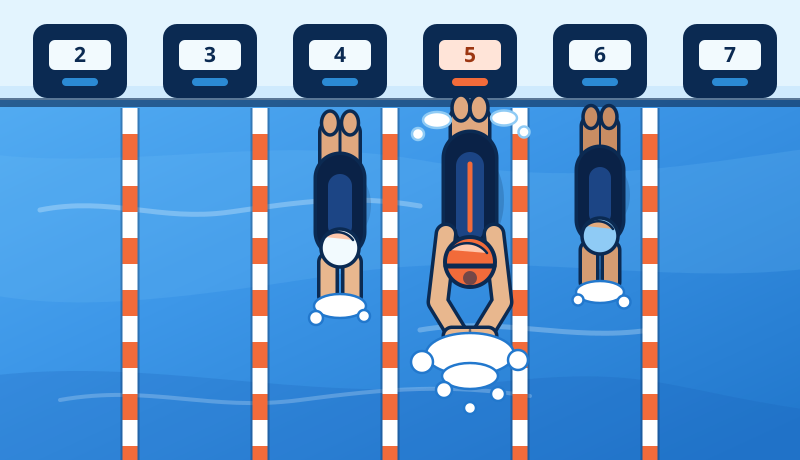

Section two
Competition day
A meet is a different problem from a practice. The work is shorter but far more intense, it is broken into unpredictable pieces across a long day, and nerves change how your stomach behaves. The goal on race day is not to optimise — it is to arrive fuelled, stay topped off, and remove every avoidable surprise.

Before competition
Race-day fueling starts the day before. By the time you're on the blocks, nothing you eat is going to add fuel — it can only settle you or upset you. Everything below works backwards from that.
The day and night before
Fill the tank while there's still time
- Raise carbohydrate across the whole day, not just at dinner. Three carbohydrate-containing meals plus snacks does far more than one enormous pasta plate at 9pm.
- Ease off fibre and fat in the evening meal. A heavy, high-fibre dinner is the most common reason swimmers wake up on race day feeling full and uncomfortable.
- Eat foods you know. The night before a meet is the worst possible time for a new restaurant, a new sauce, or a new protein bar.
- Drink steadily through the day and check that your urine is pale straw by the evening. Trying to catch up on fluid at breakfast on race morning does not work.
- Have a carbohydrate snack before bed — cereal, toast, yoghurt with fruit, or milk. Liver glycogen falls overnight, and morning heats come early.
- Lay out and pack your food the night before so race morning has one less decision in it.
- Alcohol and very late nights undercut everything above; keep the evening boring on purpose.
Race morning, hour by hour
The example below assumes a 7:00am warm-up and a 9:00am first event. Shift every row by the same amount for your own schedule and the shape stays correct.
| Time | What's happening | What to eat & drink |
|---|---|---|
| 5:15am | Wake up, roughly 3–4 h before the first event | Main pre-race meal: carbohydrate-led, low fat, low fibre, small amount of protein. Around 300–500 mL / 10–17 oz of fluid. |
| 6:45am | On deck, about to warm up | Sips of water or sports drink. Nothing new, nothing heavy. |
| 7:00–7:45am | Warm-up | Bottle on the wall. Sip through the whole warm-up like any practice. |
| 7:50am | Out of the water, roughly 70 min to the first event | Small carbohydrate snack: banana, a plain bar, a bagel half, or a few chews. Keep drinking. |
| 8:40am | 20 min out — behind the blocks soon | Only if needed: a few sips of sports drink or a couple of dates. Otherwise nothing. |
| 9:00am | First event | — |
| 9:15am | Swim-down done | Straight into the between-events routine in section 02 below. |
The pre-race windows in detail
-
3 to 4 hours before the first event
The main pre-race meal
Same principles as a pre-training meal, but even more conservative — you are optimising for a settled stomach, not for maximum fuel.
- Carbohydrate-led, in the region of 1–3 g per kg body weight depending on how much time you have and how your stomach handles food.
- Small amount of protein (roughly 15–25 g) for steadiness.
- Low fat and low fibre. No fried food, no heavy cheese, no big salads, no bran, no beans.
- Familiar foods only. This should be a meal you have already eaten before hard training sessions, several times.
- Examples that travel well: porridge with honey and banana · bagel with jam and a yoghurt · white toast with scrambled eggs · pancakes with syrup · rice with a little chicken · cereal with milk.
- Drink 300–500 mL / 10–17 oz with the meal so you have time to absorb it and use the bathroom before warm-up.
-
60 to 90 minutes before
The pre-race snack
- Small, mostly carbohydrate, around 25–45 g. This usually lands right after warm-up.
- Examples: banana · half a bagel · a plain granola or cereal bar · applesauce pouch · dried mango · a small sports drink · white rice cakes with honey.
- Keep sipping fluid, in small amounts rather than a large bottle at once.
- If you use caffeine and have tested it in training, this is the window — around 45–60 minutes before the race. Race day is not the day to try it for the first time.
-
15 to 30 minutes before
Top-off behind the blocks
- Optional and small: a few sips of sports drink, two or three dates, half a banana, a couple of chews.
- Some swimmers feel better with a little carbohydrate here; some feel better with nothing at all. Both are fine — find out in training, not at champs.
- Sip water; don't drink a whole bottle. You want an empty-feeling stomach and a hydrated body, not the reverse.
The situations that actually go wrong
When you're too nervous to eat
Pre-race nerves genuinely slow digestion and kill appetite. Skipping food entirely is the worst option, so lower the barrier instead of forcing a plate.
- Drink your carbohydrate. A smoothie, a sports drink, chocolate milk, or diluted juice is far easier to get down than solid food and empties from the stomach faster.
- Go smaller and more often — a few bites every 20 minutes instead of one meal.
- Pick bland, dry, familiar foods: plain bagel, dry cereal, white toast, crackers, plain rice cakes, banana.
- Eat earlier than you think you need to. Appetite usually gets worse as the first event approaches, not better.
- If nausea before racing is a regular, significant problem, it's worth raising with a doctor or sports dietitian rather than managing alone every meet.
Racing twice in one day
- Treat the gap between prelims and finals as a compressed version of the whole training-day recovery cycle: carbohydrate plus protein soon after prelims, a proper meal if the gap allows, then a pre-race snack 60–90 minutes before finals warm-up.
- Long gap (5–8 hours): recovery snack within 30 minutes → a normal, low-fat, low-fibre meal 3–4 hours before finals → carbohydrate snack 60–90 minutes out.
- Short gap (2–3 hours): skip the full meal. Use two or three carbohydrate-forward snacks with a little protein in the first one, and keep fluid going.
- Keep drinking through the down-time. Sitting in a warm natatorium all afternoon costs more fluid than people expect.
Bring your own food
Assume the venue has nothing you want. Pool concessions are typically fried, and a hotel breakfast may not open before your warm-up.
- Pack: bagels or bread · instant porridge sachets · plain cereal · bananas and other sturdy fruit · dried fruit · granola or cereal bars · rice cakes · honey or jam sachets · pretzels or crackers · sports drink powder or electrolyte tabs · shelf-stable milk or milk alternative · a large refillable bottle.
- If there's a fridge: yoghurt, sandwich fillings, chocolate milk, pre-cooked rice or pasta.
- Check the meet schedule against meal times the night before and decide where each meal happens, especially for early warm-ups.
- Flying or a long drive: take more fluid than feels necessary and a carbohydrate snack for the trip. Arriving dehydrated is a very common, entirely avoidable start to a meet.
The one rule that matters most: nothing new on race day. Not a new bar, not a new gel, not a new caffeine dose, not a new breakfast, not a supplement someone handed you on deck. Every single thing you eat and drink at a meet should be something you have already used in training. Test it during hard practice weeks — that is what practice is for.
During competition
A meet day can run six or eight hours with a handful of two-minute races scattered through it. The fueling problem is not intensity — it's the length of the day. The swimmers who fall apart in the last event are usually the ones who ate one meal at 6am and nothing since.
Pick by the gap between events
| Gap | Priority | What to have |
|---|---|---|
| Under 30 minutes | Fluid only | Sips of water or sports drink. No solid food — there is no time to digest it, and it will sit heavy. |
| 30 to 60 minutes | Fast carbohydrate, small | Sports drink, fruit chews, applesauce pouch, a few dates, half a banana. Swim down first, then eat. |
| 1 to 2 hours | Small snack | Banana, plain bar, bagel half with jam, pretzels, dried fruit, small yoghurt. Keep fat low. |
| 2 to 4 hours | Proper snack or small meal | Sandwich, rice or pasta with a little protein, yoghurt and granola. Eat at the start of the gap, not the end. |
| 4+ hours | Meal, then re-approach as a new race | A normal low-fat, low-fibre meal, then the standard 60–90 minute pre-race snack before warm-up. |
Small and frequent beats big and rare
- Eat a little every 60–90 minutes across the session instead of one large mid-meet meal that leaves you full for the next race.
- Front-load each gap: eat as soon as you've swum down, so the food has the maximum time to clear.
- Keep a bag of options rather than one item, so a churning stomach isn't the end of your plan.
Drink across the whole day
- Sip continuously between events rather than drinking a lot right before racing.
- Include sodium — a sports drink or an electrolyte tab — on long days, in warm venues, and if you're a heavy or salty sweater.
- Check urine colour when you go; pale straw means you're keeping up.
- Being surrounded by water and sitting in a humid building both mask thirst. Use the bottle on a schedule, not on feel.
Don't skip it, and pair it with fuel
- Swim down after every race, then drink and eat straight away — the two habits reinforce each other and set up the next swim.
- Between very close events, swim-down and fluid are the whole plan.
Careful with a long day
- If you use caffeine, keep it to a dose you have tested in training, and time it around your most important swim rather than sipping energy drinks all day.
- Stacking caffeine across a long meet leads to jitters, a raised heart rate, a bad night's sleep before day two, and often an upset stomach.
- Under-18 athletes should be especially conservative, and check anything they take against their federation's anti-doping rules.
After competition
What you do in the hour after your last event decides how day two feels — and after a three-day meet, how the following week of training feels.
-
Within 30 to 60 minutes of the last event
Recover before you leave the building
- Carbohydrate plus protein, roughly 3:1, with about 20–30 g of protein. Chocolate milk, a smoothie, yoghurt with granola, or a sandwich all do the job.
- Replace fluid and sodium. Roughly 1.25–1.5 L of fluid for every kg of body mass lost across the day, with something salty alongside it.
- Do this before the drive home, not after. The gap between "last event" and "actual dinner" is often three hours longer than anyone intends.
-
Same evening
A real meal
- Full plate: carbohydrate base, palm of protein, vegetables and fruit, and now fat and fibre are fine again.
- If you're racing again tomorrow, keep the meal moderately low in fat and fibre so it clears comfortably overnight, and get a carbohydrate snack in before bed.
- Prioritise sleep. It is the single most effective recovery tool available at a meet, and the easiest one to lose to a late night with teammates.
-
Multi-day meets
Day two and day three
- Repeat the whole cycle from the top each morning; day three is not the day to improvise.
- Carbohydrate needs stay high all week. Cumulative under-fuelling is what makes the last day of a long meet feel flat even when you tapered perfectly.
- Keep restocking your bag each night so you're not living off concessions by the final session.
- Watch fluid across consecutive days — a small deficit that never gets repaid compounds by day three.
-
After the meet ends
The week that follows
- Eat normally, and fully, for a few days afterwards. Racing on a taper is metabolically expensive and appetite often lags behind the actual need.
- Include iron-rich foods with a source of vitamin C — hard racing weeks are exactly when female swimmers tend to drop iron stores. More on iron →
- If you finished the meet feeling unusually wrecked, look at fuel, fluid, and sleep first before assuming the training was wrong.
Amounts on this page are general ranges from sports-nutrition guidance and are starting points rather than prescriptions. Check any supplement or energy product against your federation's anti-doping rules, and talk to a doctor or registered sports dietitian for guidance specific to you.